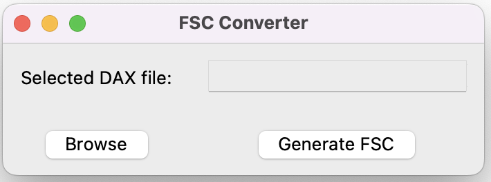
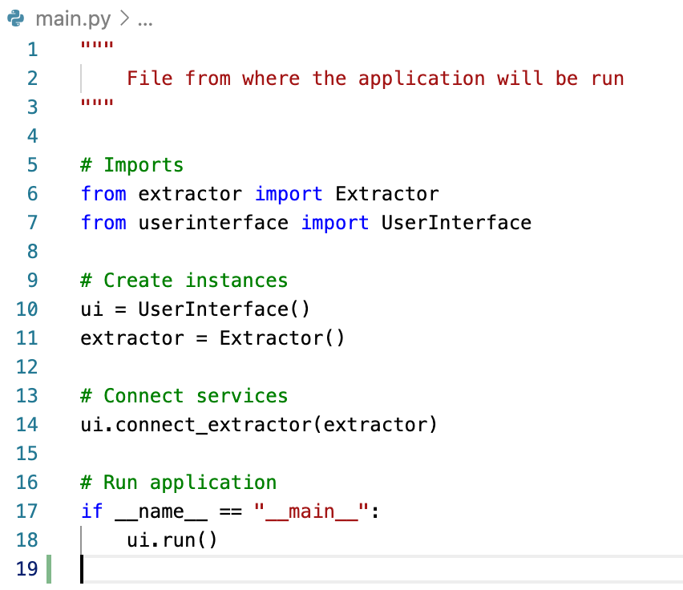
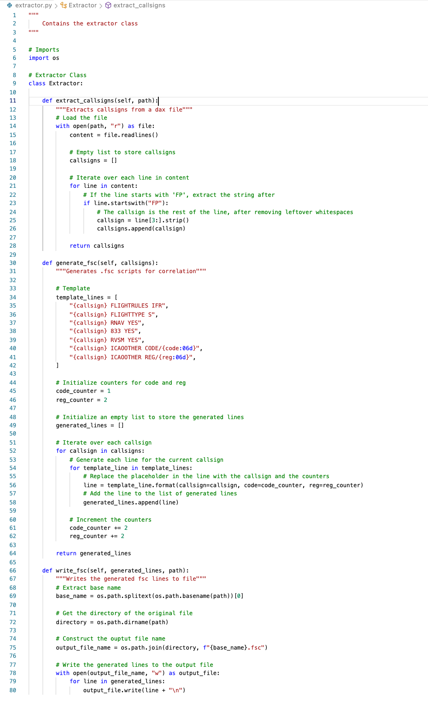
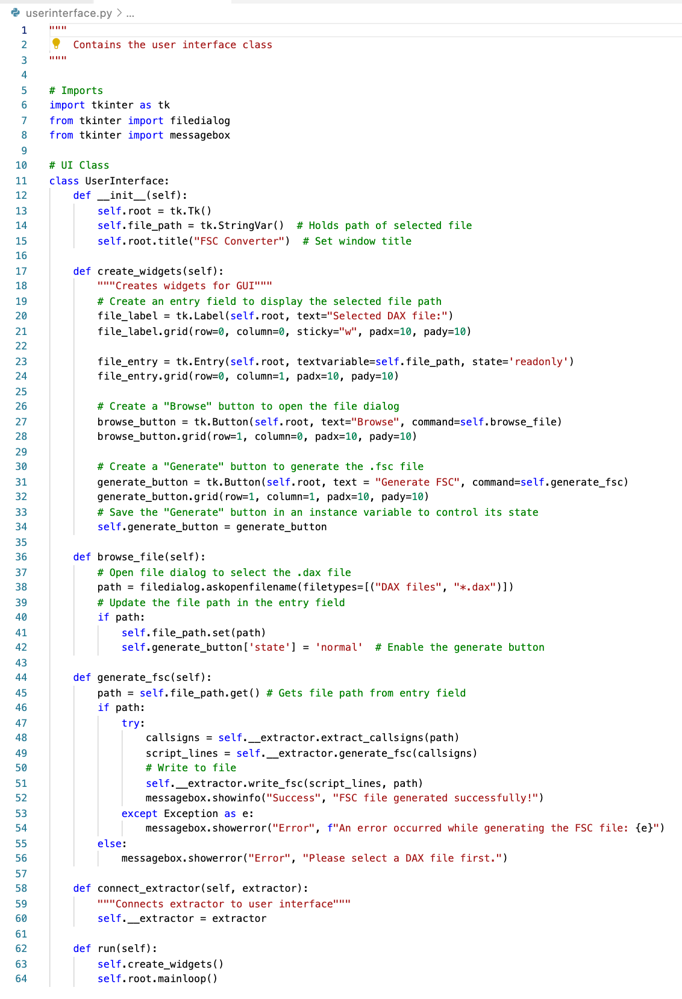

Unit 12: Artefacts
Final Reflection
During this week, I spent a lot of time on my final reflection. I tried to encapsulate as many aspects of this module's content as possible, as well as to reflect on teamwork and the team projects overall. You can find my final reflection here.
FSC Converter
As part of my job, I am responsible for creating air traffic control simulator exercises. When instructors or external companies request simulator exercises, they sometimes provide excel sheets which include the traffic samples for said exercises. Almost a year ago, I developed a simple Python webapp using Streamlit, that could take these excel sheets and turn them into '.dax' files, a format used within our simulator system. These '.dax' files can be read by the simulator database. However, for label processing to work correctly, and to provide complete functionality, we need an additional '.fsc' file, which includes seven additonal scripts per flightplan. To automate this process, I spent some time at work to create this application using Python. I've tried to incorporate some of the knowledge I had gained during the team project, in regards to the system's architecture. I also tried to include docstrings and comments wherever necessary, as that is something we had to spend a lot of time on after running 'pylint' on our assignment code.
I ended up writing three Python files:
- main.py
- extractor.py
- userinterface.py
'main.py' is the main file in the system, which sets up the __main__ loop, as well as create instance of the extractor and user interface classes. 'extractor.py' includes all the logic for the extractor class, which is responsible for extracting callsigns from '.dax' files and generating the additional scripts. It is also responsible for creating and writing to the new '.fsc' file. 'userinterface.py', as the name suggests, provides the GUI using the tkinter library.
  Download the Python files:
main.py extractor.py userinterface.pyMonolithic vs Microservice/Microkernel
This title alone could cause debates among computer scientists and system engineers. However, the choice of architectural style heavily depends on the system and the expected demand on the system being designed. For instance, because of growing demand, Netflix decided to migrate from monolithic to microservice in 2009, back when the concept was not well known (Harris, N.D.). While this worked out well for Netflix, there are other other systems or programs that may not require a microservice architecture. Small-scale applications can work well within a monolithic paradigm, while larger, high-demand applications/systems will benefit from a microservice-foucsed architecture.
In addition, monolithic applications become, over time, difficult to manage and maintain, which leads to reduced scalability (GeeksforGeeks, 2022). As suggested by Al-Debagy et al (2018), research conducted about the performance of monolithic and microservice systems showed that monolithic systems perform better under smaller loads than microservice-focused systems. This would lead me to believe that smaller applications which are expected to perform under smaller loads are better suited to monolithic architectures, while larger applications which are expected to perform under higher loads are better suited to microservices.
The thoughts and arguments mentioned above also apply to the Tanenbaum-Torvalds debate. As mentioned earlier, both approaches have their merits, and the choice heavily depends on the context. While I do agree with Torvalds regarding high performance overhead in microservice architectures, I also agree with Tanenabaum that microservice architectures provide more flexibility and portability. This is a classic argument of trade-offs, where the system architect will have to make a choice between the two. As the world moves towards Saas, IoT, and cloud services, I believe that microservices will be the future, as more and more of our applications and systems are handled by smaller independent services running in the background. A similar prediction was made by Alshuqayran et al (2016).
References
Harris, C. (N.D.) Microservices vs. monolithic architecture. Available from: https://www.atlassian.com/microservices/microservices-architecture/microservices-vs-monolith [Accessed 21 July 2023].
GeeksforGeeks (2022) Monolithic vs. Microservices architecture. Available from: https://www.geeksforgeeks.org/monolithic-vs-microservices-architecture/ [Accessed 21 July 2023].
Al-Debay, O. & Martinek, P. (2018) A Comparative Review of Microservices and Monolithic Architectures. 2018 IEEE 18th International Symposium on Computational Intelligence and Informatics (CINTI). Budapest, Hungary. 21-22 November 2018. Available from: https://ieeexplore.ieee.org/abstract/document/8928192 [Accessed 21 July 2023].
Alshuqayran, N., Ali, N. & Evans, R. (2016) A Systematic Mapping Study in Microservice Architecture. 2016 IEEE 9th International Conference on Service-Oriented Computing and Applications (SOCA). Macau, China. 04-06 November 2016. Available from: https://ieeexplore.ieee.org/abstract/document/7796008/authors#authors [Accessed 21 July 2023].